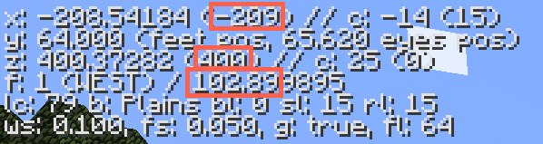
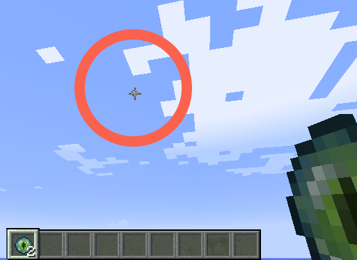

Guess Stronghold Locations
Guess Stronghold LocationsThank you for downloading Stronghold Locator! The following pages will brief you on how to best use this app. The goal is simple: find Strongholds in Minecraft for PC without knowing the seed. This is achieved using the debug (accessible in-game by pressing F3) information. Only three debug values are used:
Please note that all values can be negative and this makes a difference. No decimal part is necessary for any numbers used in Stronghold Locator except for the F value — include two digits after the decimal point for F.
Scroll down to learn about the Locate Stronghold and Guess Stronghold Locations functions.
Using two known locations with vectors (which direction your player is facing at the time), you can triangulate the closest Stronghold. All you need is a few Eye of Enders crafted from a Blaze Rod and an Ender Pearl. Make sure you debug overlay open by pressing F3. Notice the X, Z, and F fields — this is all the information you'll need to write down.
Alright! Let's get started. While standing still, throw an Eye of Ender. Quickly use the mouse to position the crosshair over the Eye of Ender as it hovers before you. Write down the X and Z values, omitting everything to the right of the decimal point. Now write down the F value, noting its sign and keeping two digits after the decimal point.
Walk at least 100 blocks in a direction perpendicular to the way the Eye of Ender floated. Throw your Eye of Ender, again, and write down this pair of X, Z, and F values.
Punch this data into the Locate Stronghold tab and make your way to the resulting coordinate pair. Dig like you've never dug before, for there will be a Stronghold beneath your feet! And you've done it!
Guess Stronghold LocationsUsing a known Stronghold location, you can guess roughly where the other two Strongholds are located. Make your way to one of the resulting coordinate pairs and use the Locate Stronghold tab to find the nearby Stronghold.